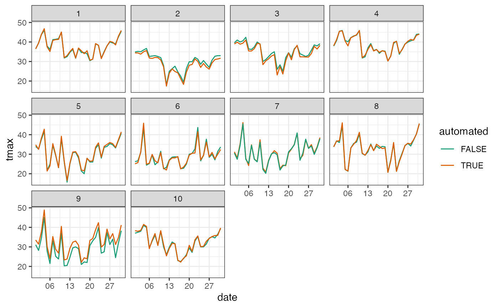

3. Application: Matching nearby stations
3-application-automated-stations.RmdOne common type of task with spatio-temporal data is to match nearby sites. For example, we may want to verify the location of an old list of stations with current stations, or we may want to pair the automated weater station with the closest traditional station to calibrate records, or we may want to investigate whether the rainfall will get translated to the river level. Some of these matches only concern the spatial dimension, while others, i.e. matching rainfall and river level, also require the temporal agreement.
This vignette introduces how to spatially and spatio-temporally match between sites with the cubble structure with two examples. The first example pairs traditional weather stations with nearby automated stations in New South Wales, Australia. This exercise only concerns the matching based on spherical distance between stations. The next example pairs the river level recorded by the river gauges with the precipitation recorded by the nearby weather station in Victoria, Australia.
Example 1
In weatherdata::climate_full, New South Wales automated stations are suffixed with aws in its name. This information tells us the automated stations from the traditional one:
nsw_map <- ozmaps::abs_ste %>% filter(NAME == "New South Wales")
nsw <- weatherdata::climate_full %>%
filter(between(stringr::str_sub(id, 7, 8), 46, 75)) %>%
mutate(automated = str_detect(name, "aws")) %>%
stretch(ts) %>%
filter(lubridate::month(date) == 1,
lubridate::year(date) == 2020) %>%
tamp() %>%
filter(!any(is.na(ts$tmax)))
plot_map(nsw_map) +
geom_point(data = nsw,
aes(x = long, y = lat, color = automated)) +
scale_color_brewer(palette = "Dark2") +
ggtitle("New Sourth Wales") +
theme_minimal() +
theme(panel.grid.major = element_blank(),
panel.grid.minor = element_blank()) +
coord_sf(xlim = c(141, 154))
The color in the map shows whether a station is an automated one or not and some automated stations are actually pretty close to the traditional ones. We would love to know whether records in these nearby pairs align with each other.
Theory
The two workhorses for matching in a cubble are match_spatial() and match_temporal(). You can call match_spatial() for spatial matching only, or match_sites(), which houses both functions, for both spatial and temporal matching. match_sites() also has an argument temporal_matching, default to TRUE, for switching on/off the temporal matching, hence match_spatial() and match_sites(..., temporal_matching = TRUE) are equivalent. By design, all the arguments that control the temporal matching are prefixed with temporal_, so do the arguments for spatial matching.
Here we will given more details on spatial matching and details on the temporal matching is in the Theory section of Example 2. A spatial matching requires two datasets: a major set and a minor set. Spatial matching calculates the spherical distance from each site in the major dataset to every site in the minor dataset using the Vincenty formula.
Once the distance is calculated, three arguments are available to refine the matching results: spatial_single_match, spatial_n_keep, spatial_dist_max. The order that these three arguments applied will slightly affect the results and in cubble, spatial_n_keep, default to 1, is first applied to keep n site(s) for each major site, spaital_dist_max, default to 10, is then applied to filter out the pairs with distance larger than this maximum distance. spatial_single_match is lastly applied to resolve the scenario where site a (minor) is the closest match for both site A and B (major), 5km and 8km respectively, if spatial_single_match = TRUE, a will only be matched to the major site with the smaller distance, that is, site A here.
Traditional vs. Automated stations
Let’s get back to the New South Wales stations - Here we construct the major site auto and minor non_auto by filtering on whether stations are automated or not. This works in the scenario for examining records from newly-installed automated stations to long-lasting traditional stations (for every newly-installed station, we want to find a nearby traditional one). We apply the spatial matching with match_sites() and turn off the temporal matching:
auto <- nsw %>% filter(automated)
non_auto <- nsw %>% filter(!automated)
matched <- match_sites(auto, non_auto, temporal_matching = FALSE) The result from the pairing is also a cubble with two additional columns: .dist as the distance between the pair and .group as the grouping index:
matched
#> # Cubble: id-wise: nested form
#> # Key: id [20]
#> id lat long elev name wmo_id automated ts .dist .group
#> <chr> <dbl> <dbl> <dbl> <chr> <dbl> <lgl> <list> <dbl> <int>
#> 1 ASN00050137 -33.1 147. 193. condobol… 95708 TRUE <tibb… 1.41 1
#> 2 ASN00050052 -33.1 147. 195 condobol… 94707 FALSE <tibb… 1.41 1
#> 3 ASN00056238 -30.5 152. 1079 armidale… 95773 TRUE <tibb… 5.16 2
#> 4 ASN00056037 -30.5 152. 987 armidale… 94773 FALSE <tibb… 5.16 2
#> 5 ASN00064017 -31.3 149. 643 coonabar… 95728 TRUE <tibb… 6.58 3
#> 6 ASN00064008 -31.3 149. 505 coonabar… 94728 FALSE <tibb… 6.58 3
#> 7 ASN00048237 -31.5 146. 218 cobar ai… 94710 TRUE <tibb… 6.86 4
#> 8 ASN00048027 -31.5 146. 260 cobar mo 94711 FALSE <tibb… 6.86 4
#> 9 ASN00070330 -34.8 150. 640 goulburn… 95716 TRUE <tibb… 7.03 5
#> 10 ASN00070263 -34.7 150. 670 goulburn… 94716 FALSE <tibb… 7.03 5
#> 11 ASN00066194 -33.9 151. 3 canterbu… 94766 TRUE <tibb… 7.14 6
#> 12 ASN00066037 -33.9 151. 6 sydney a… 94767 FALSE <tibb… 7.14 6
#> 13 ASN00068192 -34.0 151. 73.9 camden a… 94755 TRUE <tibb… 8.17 7
#> 14 ASN00068257 -34.1 151. 112 campbell… 94757 FALSE <tibb… 8.17 7
#> 15 ASN00072160 -36.1 147. 164. albury a… 95896 TRUE <tibb… 8.33 8
#> 16 ASN00072023 -36.1 147. 184 hume res… 94901 FALSE <tibb… 8.33 8
#> 17 ASN00067113 -33.7 151. 24.7 penrith … 94763 TRUE <tibb… 8.77 9
#> 18 ASN00063077 -33.7 151. 320 springwo… 95744 FALSE <tibb… 8.77 9
#> 19 ASN00063291 -33.4 150. 744. bathurst… 94729 TRUE <tibb… 9.30 10
#> 20 ASN00063005 -33.4 150. 713 bathurst… 94730 FALSE <tibb… 9.30 10Then we can create visualisation to see where these pairs are in the map:
plot_map(nsw_map) +
geom_point(data = matched,
aes(x = long, y = lat, color = automated)) +
ggrepel::geom_label_repel(data = matched %>% filter(automated),
aes(x = long, y = lat, label = .group)) +
scale_color_brewer(palette = "Dark2") +
ggtitle("New South Wales") +
theme_minimal() +
theme(panel.grid.major = element_blank(),
panel.grid.minor = element_blank()) +
coord_sf(xlim = c(141, 154))
or compare the series within the same pair (as an example here we only look at records in Jan 2020):

We can see that in general the maximum temperatures recorded in traditional and automated stations from our pairs are matched. There’s a constant gap in pair 9, which suggests the two stations need to be further calibrated.
Example 2
The water level data comes from Bureau of Meteorology and has a copy in weatherdata. Here we extract the water course level and add a column annotate this data of type river. For the rainfall data, we will still use the weatherdata::climate_full, filtering for Victorian stations in 2020 should be pretty familiar by now. Again, we first look at where these stations are on the map first:
river <- weatherdata::water %>%
stretch() %>%
select(date, Water_course_level) %>%
tamp() %>%
mutate(type = "river")
climate <- weatherdata::climate_full %>%
filter(between(stringr::str_sub(id, 7, 8), 76, 90)) %>%
stretch() %>%
filter(lubridate::year(date) == 2020) %>%
tamp() %>%
mutate(type = "climate")
vic_map <- rmapshaper::ms_simplify(ozmaps::abs_ste %>% filter(NAME == "Victoria"))
plot_map(vic_map) +
geom_point(data = dplyr::bind_rows(river, climate) ,
aes(x = long, y = lat, color = type)) +
scale_color_brewer(palette = "Dark2") +
theme_bw()Theory
Temporal matching checks how spatially matched pairs align temporally. We use the following chart to illustrate how the temporal matching works:

For each spatially matched pair, say A and a, we first find the largest n points in each series, colored in brown points here. Here we use the largest three but you can tune this number by temporal_n_highest. Then we construct the interval of the largest points from one series and see how many points, from the other series, fall into the intervals. The series used to construct the interval is controlled by temporal_independent and the window size by temporal_window with a default of 5.
In this illustration, we construct the interval based on series A and two of the three peaks from a falls into this interval at Time 7 and 27.
Rainfall translates into river level
There’s another mandatory argument that hasn’t been introduced above: temporal_var_to_match. This argument controls the variable to match and it needs to appear in both the major and minor set. In the water level matching example, we match the variable Water_course_level from river to prcp from climate, hence need to manually rename one of them to match the other, here we rename Water_course_level to prcp in river:
Now we use match_sites() to first pair the weather stations with the river gauges spatially and then apply the temporal matching on prcp. We will construct the interval based on peaks in climate since we would expect a lag effect for precipitation to flow into the river and cause a raise in river level, hence temporal_independent = climate. We select the 30 highest peak from the series to construct the match by setting temporal_n_highest = 30. This is a tuning parameter and you can start with 10% of the points of one series (here we have daily data for a year, 10% is roughly 30 points). temporal_min_match filters out pairs don’t have enough match and to return all the pairs, set temporal_min_match to 0.
res <- match_sites(river, climate,
temporal_var_to_match = prcp,
temporal_independent = climate,
temporal_n_highest = 30,
temporal_min_match = 15
)
res
#> # Cubble: id-wise: nested form
#> # Key: id [8]
#> id name lat long type ts .dist .group n_match
#> <chr> <chr> <dbl> <dbl> <chr> <list> <dbl> <int> <int>
#> 1 405234 SEVEN CREEKS @ D… -36.9 146. river <tibble … 6.15 5 21
#> 2 ASN00082042 strathbogie -36.8 146. clim… <tibble … 6.15 5 21
#> 3 404207 HOLLAND CREEK @ … -36.6 146. river <tibble … 8.54 10 21
#> 4 ASN00082170 benalla airport -36.6 146. clim… <tibble … 8.54 10 21
#> 5 230200 MARIBYRNONG RIVE… -37.7 145. river <tibble … 6.17 6 19
#> 6 ASN00086038 essendon airport -37.7 145. clim… <tibble … 6.17 6 19
#> 7 406213 CAMPASPE RIVER @… -37.0 145. river <tibble … 1.84 1 18
#> 8 ASN00088051 redesdale -37.0 145. clim… <tibble … 1.84 1 18The output from temporal matching is also a cubble, with additional column .dist and .group inherent from spatial matching and n_match for the number of matched temporal peaks. Then you can use this output to plot the location of match:
plot_map(vic_map) +
geom_point(data = res,
aes(x = long, y = lat, color = type)) +
ggrepel::geom_label_repel(data = res %>% filter(type == "river"),
aes(x = long, y = lat, label = .group)) +
scale_color_brewer(palette = "Dark2") +
ggtitle("Victoria") +
theme_minimal() +
theme(panel.grid.major = element_blank(),
panel.grid.minor = element_blank())Or to look at the series:
res_long <- res %>%
stretch() %>%
migrate(.group) %>%
mutate(prcp = scale(prcp)[,1]) %>%
switch_key(.group) %>%
left_join(as_tibble(res) %>% select(.group, type, id))
res_long %>%
ggplot(aes(x = date, y = prcp, color = type)) +
geom_line() +
facet_wrap(vars(.group)) +
scale_color_brewer(palette = "Dark2", guide = "none") +
theme_bw() +
labs(x= "week") +
scale_x_date(date_labels = "%b")